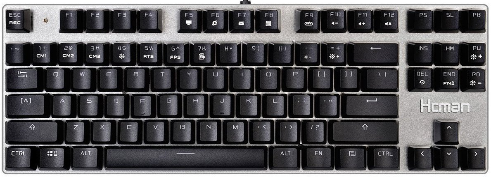
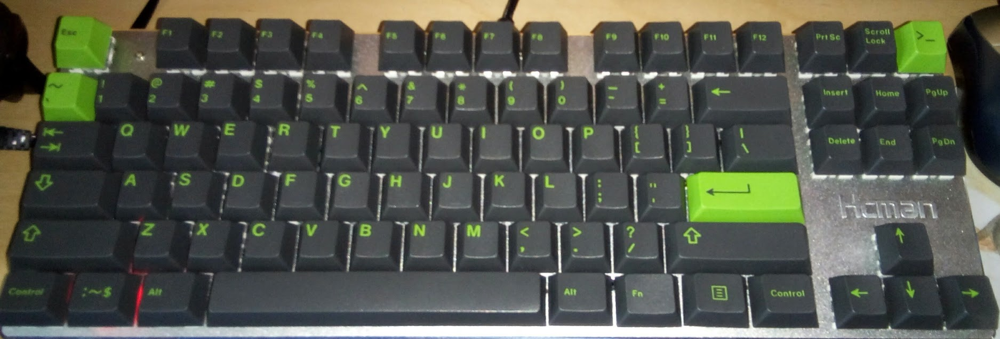
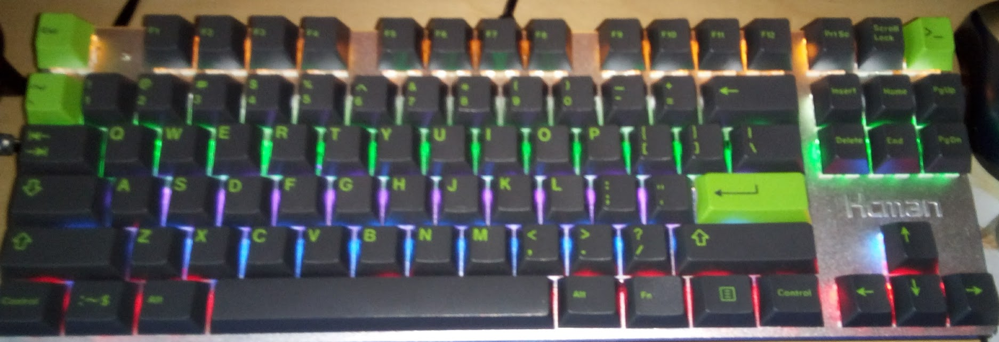

Review of Hcman Mechanical Gaming Keyboard Blue Switches,PC Gaming Keyboard of 6 Colors Led Backlit for Computer or Mac,87 Keys
Phew, that's a long title. Only one category of items could have a name as long as that - cheap Amazon stuff! I was able to find a mechanical keyboard for under $30. But at the amazing price of $25.99, is it any good? Let's find out!
Before I start, I want to mention that I never planned to do a review of this, so I threw away the box and did not take pictures of it. I will be using some pictures from the product page.
Here's a picture of the keyboard from the product page:
The product looks almost identical to that picture, with the one exception of the logo being shinier. Here's mine:

It looks a bit different! Recently, I went to the Seattle Mechanical Keyboards expo and won a set of GMK Terminal keycaps. Since I program, these keycaps are great for me! I decided to put them on my keyboard. However, they make the keyboard's clicking more high pitched, because they are a different material.
One interesting thing about this keyboard is that it has a colorful backlight, but is not RGB. Each row is a different color. This makes it look bad with my non-gamer keycaps, so I would want to turn the backlight off entirely.

Unfortunately, I cannot disable the Windows key LED without disabling the functionality the key would normally provide.
More details + Overall Judgement
I rate the Hcman mechanical keyboard 3 stars out of 5. Here are the pros of this keyboard:- This is one of the cheapest mechanical keyboards you can buy, and it works. I would rather have this than a $50 rubber dome keyboard.
- This has PBT keycaps. The key legends will not wear out for a long time.
- It has an aluminum plate, which looks nice.
- It has a braided cable, which is durable.
Here are the cons:
- There is a big ugly "Hcman" logo. It is shiny and distracting, and takes away from the professional feel.
- You can't turn off the Windows key's LED without disabling the key's functionality.
- I don't like the rainbow LED pattern.
- I feel like this is marketed too much towards gamers. This is a blue switch keyboard - not many gamers would use it. It is better for typing. I would prefer the original keycaps to have a regular font.
I would recommend this to anyone who wants a mechanical keyboard, but cannot pay for an expensive one. I would not recommend this to people who can afford a better one, as there are much better ones that have more features.